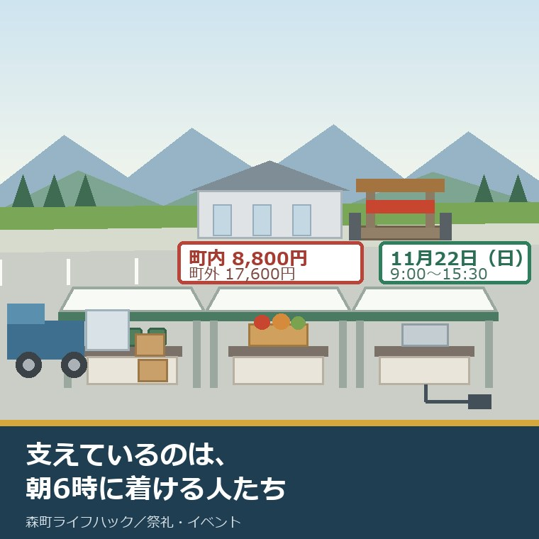
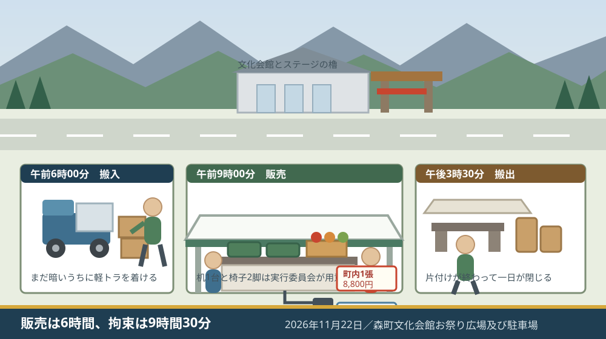
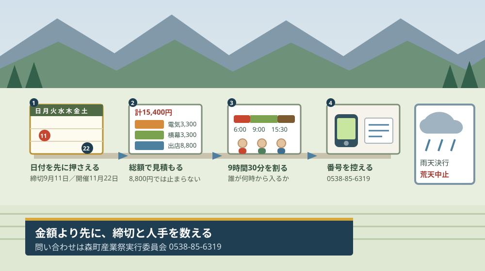

森町もりもり2万人まつり｜第39回11月22日を支えるのは誰か

この記事の要点
Q. 森町のもりもり2万人まつりは、今年はいつやるんですか。
A. 第39回は2026年11月22日（日曜日）午前9時から午後3時30分、森町文化会館お祭り広場及び駐車場です。主催は森町産業祭実行委員会。出店の申し込みは8月14日から9月11日まで、出店料はテント1張につき町内8,800円・町外17,600円（税込）です。
静岡県周智郡森町（遠州森町）の秋の行事のうち、町の外にいる家族にも名前が届いているものの一つが、森町産業祭「もりもり2万人まつり＆農協祭」です。実家が森町にある方から「今年もあるのか」と聞かれることがあります。
私は磐田市で小さな不動産業を営みながら、森町の空き家・農地・実家じまいのご相談を受けています。祭りの話は、私の商売から遠いようでいて、実は近いところにあります。誰が支えているのか、その人たちが何を負担しているのかという問いは、家や土地の引き継ぎとまったく同じ形をしているからです。
今日は2026年8月29日です。第39回の出店者募集は、すでに始まっています。申込期間は2026年8月14日から9月11日まで。今日から数えると、締切まで13日です。
この記事では、来場する側の案内ではなく、出す側・支える側が実際に払うものを金額と時間で並べます。数字は森町の公表資料から取り、割り戻しの計算は私がやったものとして分けて書きます。
公式情報から確定できること
2026年8月29日時点で、森町の公表資料から確認できたことを順に並べます。出典は記事の末尾に載せています。
一つ目。正式名称は「第39回森町産業祭『もりもり2万人まつり＆農協祭』」です。「もりもり2万人まつり」は単独の祭りの名前ではなく、森町産業祭の愛称にあたる部分です。町の公表ページも、この長い名前で表記しています。
二つ目。開催日は令和8年（2026年）11月22日の日曜日です。時間は午前9時00分から午後3時30分まで。このうち販売時間は午前9時00分から午後3時00分までと、別に書き分けられています。
三つ目。会場は森町文化会館お祭り広場及び駐車場です。文化会館の住所は周智郡森町森1485で、これは同じ第39回のステージイベント出演者募集のページに記載があります。つまり、当日は文化会館の駐車場そのものが会場になります。
四つ目。雨天決行・荒天中止です。雨が降っても開くが、荒れた天気なら中止する、という二段構えです。雨天の場合、ステージイベントは文化会館大ホールに移ると案内されています。
五つ目。主催は森町産業祭実行委員会です。町の単独主催ではありません。実行委員会の連絡先として、電話0538-85-6319、ファックス0538-86-6514が掲載されています。
六つ目。出店の申込期間は令和8年8月14日（金曜日）から9月11日（金曜日）までです。29日間しかありません。開催日の11月22日から見れば、締切は72日前にあたります。
七つ目。出店料はテント1張につき、町内8,800円、町外17,600円（いずれも税込）です。町外は町内のちょうど2倍です。この差額8,800円は、町内の団体が優遇されているというより、町外から来る事業者に町内と同じ棚代を求めていない、という設計に見えます。
八つ目。1団体につき3コマまでという上限があります。大きな事業者が場所を占めない仕組みです。町内で上限いっぱいの3コマを取ると、出店料は26,400円になります。
九つ目。テント1コマの大きさは3.6メートル×2.7メートルです。そして、机（1.8メートル×0.9メートル）1台と椅子2脚は実行委員会が準備すると明記されています。ここは出店者の持ち出しになりません。
十番目。追加の備品には別料金があります。机の追加が1,100円、椅子が550円、横幕1コマ分が3,300円、電気利用料が3,300円です。電気はコンセント1個・2口で、合計1,500Wまでという上限が付いています。
十一番目。搬入は当日午前6時00分から午前8時30分まで（予定）、搬出は午後3時30分から（予定）です。前日搬入の案内は、この募集ページにはありません。
十二番目。前回の第38回は、令和7年（2025年）11月16日に開かれました。森町合併70周年記念の回で、町の公表ページには「140以上のブース」が出店したと記載があります。ジュビロ磐田、三遠ネオフェニックス、遠江総合高校吹奏楽部などの出演も記録されています。
十三番目。第39回の出店数・来場者数の見込みは、公表資料に記載がありません。「2万人」という名称の由来も、私が見た範囲の町の公表ページには書かれていませんでした。ここは未確認のまま残します。

この絵で描きたかったのは、午前6時という時刻です。祭りの写真は、たいてい人が集まった昼間のものになります。けれども出す側の一日は、まだ暗い時間に軽トラックを着けるところから始まります。
もう一つ描いたのは、机の下から伸びている電源のコードです。1,500Wという上限は、店の中身をかなり決めてしまいます。この線の細さが、当日の品書きの範囲になります。
出店料8,800円を、商売の数字に置き換える
ここからは割り戻しです。分母を先に書きます。1坪は3.305785平方メートルで換算しました。以下の単価はすべて私の計算で、森町が公表している数字ではありません。
まず、面積あたりです。テント1コマは3.6メートル×2.7メートルで9.72平方メートル、坪に直すと約2.94坪です。町内の出店料8,800円をこの面積で割ると、1坪あたり約2,990円になります。1日だけの棚代です。
次に、時間あたりです。販売時間は午前9時から午後3時までの6時間ですから、8,800円÷6時間で1時間あたり約1,470円です。この数字だけを見れば、常設の店舗を1日借りるより、はるかに安い。
ところが、拘束時間で割り直すと景色が変わります。搬入開始の午前6時から搬出開始の午後3時30分まで、9時間30分です。8,800円をこれで割ると1時間あたり約926円。出店料そのものは安いのに、人が張り付く時間は9時間半あります。
この9時間30分を、人手の話に置き換えます。2人で通しで入れば、延べ19時間です。3人交代で組めば1人あたり3時間強で済みますが、そのためには当日の朝に3人を集める必要があります。出店料8,800円より、この3人のほうが集めにくい、というのが私の見方です。
電気の上限も数字にしておきます。電気利用料3,300円で、コンセント1個・2口・合計1,500Wまでです。1Wあたり2.2円という計算になりますが、それより効くのは上限そのものです。家庭用のホットプレートや電気ケトルは1台で1,200W前後のものが珍しくないので、2口あっても実質1台分だと考えておくほうが安全です。
| 項目 | 金額（税込） | 私の割り戻し |
|---|---|---|
| テント1張（町内） | 8,800円 | 約2.94坪＝1坪あたり約2,990円 |
| テント1張（町外） | 17,600円 | 町内のちょうど2倍 |
| 町内3コマ（上限） | 26,400円 | 29.16平方メートル＝約8.82坪 |
| 机の追加1台 | 1,100円 | 出店料8,800円の12.5パーセント |
| 椅子の追加1脚 | 550円 | 同6.25パーセント |
| 横幕1コマ分 | 3,300円 | 同37.5パーセント |
| 電気利用料 | 3,300円 | 1,500Wまで＝1Wあたり2.2円 |
この表で見ていただきたいのは、横幕3,300円と電気3,300円が、出店料の3分の1以上を占めるということです。テントの下で調理をして、団体名を掲げようとすると、8,800円は15,400円になります。それでも1日の棚代としては安いのですが、「8,800円だと思っていた」と後から言われる幅がここにあります。
もう一つ、規模の見当を付けておきます。第38回の「140以上のブース」がすべて町内テント1張だったと仮定すると、出店料の合計は8,800円×140で約123万円です。これは私が置いた仮定に基づく概算で、町内と町外の内訳も、実行委員会の収支も公表されていません。実際の額とは違うはずです。
それでも、この概算には意味があります。140ブースを集めても、出店料だけでは百数十万円の規模だということです。祭りの費用がここだけで賄えているとは考えにくい。残りは町の事業費と、協賛と、数えられていない人手で埋まっているはずです。
「2万人」という名前と、町の人口16,422人
この祭りの名前について、一度だけ立ち止まります。森町の人口は、住民基本台帳による2026年8月1日現在で16,422人（男8,213人・女8,209人）、世帯数は6,763世帯です。
つまり「2万人」は、森町の人口より3,578人多い数字です。町の人口の約1.22倍にあたります。名前の由来は町の公表ページに書かれていないので、これがどこから来た数字なのかは私には分かりません。
ただ、名前として掲げられている数が町の人口を超えている、という一点は覚えておく価値があります。この祭りは最初から、町の中だけで完結する行事として設計されていないという読み方ができるからです。
実際、第38回にはジュビロ磐田と三遠ネオフェニックスが出ています。どちらも森町の団体ではありません。町の人口を超える数を掲げるなら、外から人を呼ぶ必要がある。名前と出演者の並びは、その意味で一貫しています。森町の人口の動きそのものは国勢調査の速報値で見る森町の人口のほうで整理しました。
良い点：第39回の募集要項がよくできているところ
出店者募集のページを一枚の書類として見たとき、評価したい点が4つあります。順に書きます。
一つ目。机1台と椅子2脚が出店料に含まれていることです。これは地味なようで大きい。机と椅子を自前で運ぶとなると、軽トラックが要るか、二往復するかになります。備品が現地にあるという一行が、参加できる団体の幅を広げています。
二つ目。追加料金が品目ごとに全部書いてあることです。机1,100円、椅子550円、横幕3,300円、電気3,300円。金額が先に分かっていれば、申し込む前に総額を出せます。当日になって「これは別料金です」と言われる形になっていません。
三つ目。1団体3コマまでという上限があることです。資金力のある事業者が場所を押さえてしまう祭りは、回を重ねるほど出店者の顔ぶれが固定します。3コマという上限は、小さい団体が残るための仕掛けとして効いています。
四つ目。雨天時のステージ移設先が先に書いてあることです。雨天決行・荒天中止と書くだけなら簡単ですが、雨のときステージが文化会館大ホールへ移ると明記されている。出演する側は、当日の朝に行き先を探さずに済みます。
注文したい点：出す側から見て足りないところ
ここからは、出店を検討している一事業者の立場での注文です。批判ではなく、使う側から見た報告として4つ書きます。
一つ目。申込期間が29日間しかないことです。8月14日から9月11日まで。この期間はお盆と重なっており、団体で相談して決める組織ほど、最初の1週間が動きません。実質の検討期間は3週間程度になります。
二つ目。前回の出店数は分かるのに、今回の募集枠数が分からないことです。第38回は「140以上のブース」と記録されていますが、第39回に何コマ用意されているのかは書かれていません。枠が余っているのか埋まりかけているのかで、申し込む側の急ぎ方は変わります。
三つ目。搬入時刻が「予定」と書かれたままであることです。午前6時00分から午前8時30分まで（予定）、搬出は午後3時30分から（予定）。当日の人手を組む立場からすると、この2時間半の枠のどこに自分の団体が入るのかが、いつ確定するのかを知りたい。
四つ目。食品を出す場合の手続きが、この募集ページからは追えないことです。模擬店で何を売るかによって、保健所への許可と届出のどちらが要るかが変わります。この線引きは森町の祭りで模擬店を出すときの許可と届出で別に整理しました。出店料の話と食品の手続きの話が、同じ紙の上にないことが、出す側にとっては一番の手間になります。

この図で一段目に日付を置いたのには理由があります。出店の可否を決める前に、9月11日という締切が動かせない事実として先にあるからです。金額の相談を先に始めると、決まった頃には締切が過ぎています。
三段目に時間の帯を置いたのも同じ考え方です。当日の9時間30分を誰が埋めるかは、申し込む前に決めておくことです。申し込んでから人を探す順序になると、当日いちばん無理をするのは、たいてい言い出した本人になります。
対案・結論：今日、ご家族が確かめられること
森町の外に住んでいても、今日のうちに進められることがあります。順番に5つ書きます。役場が開いていない日でもできる内容にしました。
一つ目。2026年11月22日（日曜日）を、家族の予定表に先に入れてください。実家が森町にあり、親御さんが毎年この祭りに関わっているなら、その日は町にいる可能性が高い。帰省や相談の日程を、この日に寄せられるかどうかを先に見ます。
二つ目。出す側に回るかもしれない場合は、9月11日までの残り日数を数えてください。今日から13日です。地区や団体で相談して決めるなら、次の集まりが締切前にあるかどうかがそのまま答えになります。
三つ目。出店の総額を、8,800円ではなく15,400円で見積もってください。横幕と電気を足した額です。この額で成り立たないなら、品目のほうを先に変える判断になります。
四つ目。当日の9時間30分を、誰が何時から何時まで入るかで紙に書いてください。午前6時から午前8時30分の搬入に入れる人が1人もいないなら、申し込みの前に止まったほうがいい。ここは金額では解決しません。
五つ目。実行委員会の電話番号0538-85-6319を控えてください。荒天中止の判断、搬入時刻の割り振り、募集枠の残りは、いずれもこの番号にかかります。控えるのは今日、かけるのは平日で構いません。
ここまでやっても、出店するかどうかを今日決める必要はありません。今日の成果は、締切までの日数と、当日の拘束時間と、総額の見当が揃ったことです。この3つが揃っていれば、次の集まりで結論を出せます。
家族に残す記録
確かめた内容は、その日のうちに1枚にまとめてください。祭りの話は毎年繰り返すので、一度書いておくと来年そのまま使えます。
書き出す項目は6つです。①開催日と時間 ②会場 ③申込期間 ④出店料と追加料金の総額 ⑤当日の搬入・搬出時刻 ⑥実行委員会の電話番号。この6項目は、回が変わっても同じ枠で埋められます。
加えて、確認できなかったことも同じ紙に残します。「第39回の募集枠数は公表されていない」「『2万人』という名称の由来は町の公表ページに記載がない」の2つです。分からないことを分からないまま書いておくと、来年その欄から確認を再開できます。
もう一つ、親御さんが関わっている場合には、その団体の中で誰が何を担当しているかを一行書き足してください。会計なのか、搬入の運転なのか、当日の売り子なのか。これは家の名義や農地の管理と同じで、聞かないままにしておくと、代替わりのときに全部が同時に出てきます。祭りを支える側の負担の全体像は森町の祭りを支える側の負担で整理しています。
大石の視点
ここからは公表資料の話ではなく、私がどう見ているかを書きます。体験談として書ける現場の一場面は手元にないので、意見として明示します。
私が募集要項を読んで最初に思ったのは、「この祭りの規模を決めているのは、来場者の数ではない」ということでした。決めているのは、9月11日までに申込書を出す団体の数です。来場者は当日に増減しますが、ブースの数は72日前に確定しています。
だから私はこう言い切ります。もりもり2万人まつりを支えているのは、8,800円を払って午前6時に軽トラックを着ける人たちです。140以上のブースという数字は、その人たちが140回以上、同じ朝を繰り返した結果です。
不動産の仕事をしていると、この構造には見覚えがあります。担い手の頭数が先に決まっていて、規模はその後から付いてくる。祭りも、集落の共同作業も、実家の管理も同じ形です。人が1人抜けたときに一番早く効いてくるのは、金額ではなく朝の時間帯です。
一方で、私が気にしているのは、この29日間の申込期間が、団体にとって短くないかということです。個人事業者なら1人で決められます。地区の団体や、農家の組合や、学校の保護者組織は、集まって決めるところから始まります。お盆をまたぐ29日間で、次の集まりが1回しかない団体は珍しくないはずです。
ただ、これは私の推測です。過去の回で申し込みが期間内に埋まっているのかどうかは、公表されていません。締切を延ばした回があったのかも確認できませんでした。短いと感じるのは、私が外から見ているからかもしれない。ここは断定せずに残します。
もう一つ、会場が文化会館の駐車場そのものだという点は、地味に効いています。広場だけでなく駐車場を会場にするということは、当日の来場者の車をどこかに逃がしているということです。周辺の空き地や農地が、その日だけ駐車場として使われる形は、森町に限らずよくあります。持ち主が高齢になると、この「その日だけ貸す」がまず止まります。
私が実家じまいのご相談で見ているのは、そういう場所です。使わなくなった土地が、祭りの日だけ生きているという形は、森町にいくつもあると考えています。名義と境界がはっきりしているうちは貸せますが、相続で共有名義になると、その日だけの貸し借りが止まります。
その上で、出す側を考えている方に一つだけ申し上げます。今年の申込を見送るのは、まったく構いません。ただし、見送ると決めた理由を1行だけ書き残してください。「人が集まらなかった」のか「総額が合わなかった」のか「日程が合わなかった」のかで、来年やることが変わります。
そして、決めるのは今日でなくて構いません。私は「まだ決めない」という状態を、悪いことだとは思っていません。ただ、9月11日という締切だけは動きません。決めない自由を残すためにも、締切と総額と人手の3つだけは今日のうちに数えておいてください。
実家の名義、境界、農地、道路まで含めて順に整理したい方は、実家カルテのような形で1枚にまとめる方法もあります。売ると決めていなくても使える整理の仕方です。森町の特産品そのものの背景は森の茶の歴史のほうに書きました。
まとめ
この記事で確認した事実を、最後に並べ直します。すべて2026年8月29日時点で公表されている内容です。
- 正式名称は「第39回森町産業祭『もりもり2万人まつり＆農協祭』」。主催は森町産業祭実行委員会
- 開催日は2026年11月22日（日曜日）午前9時00分～午後3時30分。販売時間は午前9時00分～午後3時00分
- 会場は森町文化会館お祭り広場及び駐車場。文化会館の住所は周智郡森町森1485
- 雨天決行・荒天中止。雨天時のステージイベントは文化会館大ホールへ移る
- 出店の申込期間は2026年8月14日から9月11日までの29日間。開催日の72日前が締切
- 出店料はテント1張につき町内8,800円、町外17,600円（税込）。1団体3コマまで
- テント1コマは3.6メートル×2.7メートル。机（1.8メートル×0.9メートル）1台と椅子2脚は実行委員会が準備
- 追加は机1,100円、椅子550円、横幕1コマ分3,300円、電気利用料3,300円（コンセント1個・2口、合計1,500Wまで）
- 搬入は当日午前6時00分～午前8時30分（予定）、搬出は午後3時30分から（予定）
- 前回の第38回は2025年11月16日開催、「140以上のブース」が出店（町の公表ページ）
- 森町の人口は2026年8月1日現在16,422人、6,763世帯（住民基本台帳）。名称の「2万人」は人口より3,578人多い
- テント1コマは9.72平方メートル＝約2.94坪。町内8,800円は1坪あたり約2,990円（私の計算）
- 販売6時間で割ると1時間あたり約1,470円、搬入から搬出までの9時間30分で割ると約926円（私の計算）
- 横幕と電気を足すと総額15,400円。出店料の1.75倍（私の計算）
- 第39回の募集枠数、来場者見込み、「2万人」の名称の由来は、いずれも公表資料に記載を確認できなかった
よくある質問
Q1. 第39回の森町もりもり2万人まつりは、いつ・どこで開かれますか。
A1. 2026年11月22日（日曜日）の午前9時00分から午後3時30分まで、森町文化会館お祭り広場及び駐車場で開かれます。販売時間は午前9時00分から午後3時00分までです。雨天決行・荒天中止で、雨天の場合のステージイベントは文化会館大ホールに移ります。主催は森町産業祭実行委員会です。
Q2. 出店したい場合、いつまでに、いくらかかりますか。
A2. 申込期間は2026年8月14日から9月11日までです。出店料はテント1張につき町内8,800円、町外17,600円（税込）で、1団体3コマまで。テント1コマは3.6メートル×2.7メートルで、机1台と椅子2脚は実行委員会が準備します。机の追加は1,100円、椅子は550円、電気利用料は3,300円（合計1,500Wまで）です。
Q3. 当日は何時に会場へ入ることになりますか。
A3. 出店者の搬入は当日午前6時00分から午前8時30分まで（予定）、搬出は午後3時30分から（予定）と案内されています。販売時間は午前9時から午後3時までの6時間ですが、搬入開始から搬出開始までを数えると9時間30分になります。人手の交代を組むかどうかは、この時間で決めることになります。
最後に一つだけ。ここに書いた日付、金額、面積、時刻、ブース数は、いずれも森町の公表ページに記載されている値を、2026年8月29日に確認して書き写したものです。坪単価、時間単価、総額の倍率、人口との差は、私がその値を分母で割った概算であり、森町が公表している数字ではありません。第38回のブース数から出店料の合計を試算した部分は、私が置いた仮定に基づくもので、実際の内訳とは異なります。募集内容と開催内容は変更されることがあります。申し込む前に、必ず森町産業祭実行委員会（0538-85-6319）へご確認ください。
参考にした公式情報
- 第39回森町産業祭「もりもり2万人まつり＆農協祭」出店者募集／静岡県森町（「更新日：2026年07月14日」と表示されていること、開催日時が「令和8年11月22日（日曜日）午前9時00分～午後3時30分」、販売時間が「午前9時00分～午後3時00分」、雨天決行・荒天中止であること、会場が「森町文化会館お祭り広場及び駐車場」で雨天時のステージイベントが文化会館大ホールとなること、主催が森町産業祭実行委員会であること、申込期間が「令和8年8月14日（金曜日）～令和8年9月11日（金曜日）」であること、出店料が町内テント1張8,800円・町外テント1張17,600円（税込）であること、1団体3コマまでであること、テント1コマが3.6m×2.7mで机（1.8m×0.9m）1台・椅子2脚を実行委員会が準備すること、机1,100円・椅子550円・横幕1コマ分3,300円・電気利用料3,300円（コンセント1個・2口合計1,500Wまで）の追加料金があること、搬入が当日午前6時00分～午前8時30分（予定）・搬出が午後3時30分から（予定）であること、連絡先が電話0538-85-6319・ファックス0538-86-6514であることを2026年8月29日に確認）
- 第39回森町産業祭「もりもり2万人まつり＆農協祭」ステージイベント出演者募集／静岡県森町（「更新日：2026年08月01日」と表示されていること、会場の住所が「周智郡森町森1485」と記載されていること、主催が森町産業祭実行委員会であることを2026年8月29日に確認）
- 森町合併70周年記念 第38回森町産業祭「もりもり2万人まつり&農協祭」／静岡県森町（「更新日：2025年11月11日」と表示されていること、開催日が令和7年11月16日であること、「140以上のブース」が出店したと記載されていること、ジュビロ磐田・三遠ネオフェニックス・遠江総合高校吹奏楽部の出演が記載されていることを2026年8月29日に確認）
- 森町の月別人口／静岡県森町（2026年8月1日現在の総人口が16,422人（男8,213人・女8,209人）、世帯数が6,763世帯と記載されていること、担当が住民生活課住民係（0538-85-6312）であることを2026年8月29日に確認）

最終確認日：2026-08-29 ／ 本記事は公表情報と執筆者の見解を分けて記載しています。坪単価・時間単価・総額の倍率・人口との差は、いずれも執筆者が公表値を分母で割った概算であり、森町が公表している統計ではありません。第38回のブース数から出店料の合計を試算した部分は、執筆者が置いた仮定に基づくもので、実行委員会の収支とは異なります。第39回の募集枠数、来場者見込み、名称「2万人」の由来は公表資料で確認できていません。募集内容・開催内容・料金は変更されることがあります。申し込む前に、必ず森町産業祭実行委員会（0538-85-6319）へご確認ください。